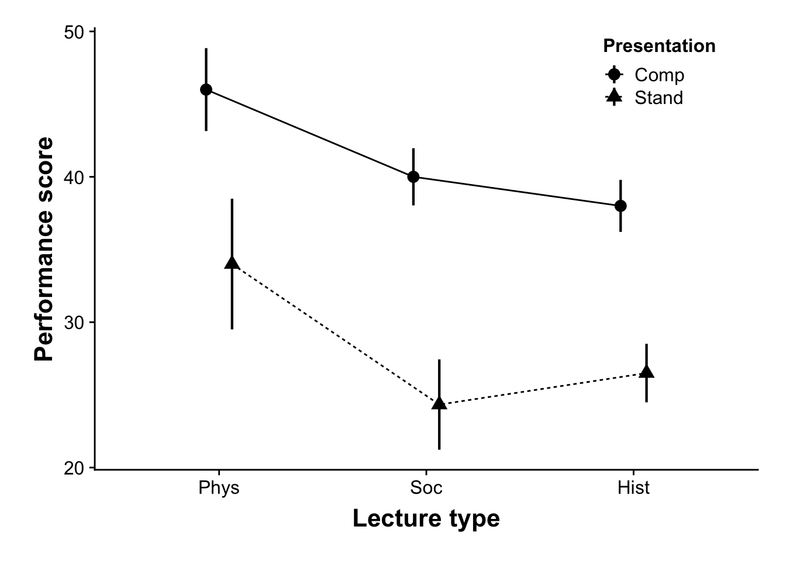

Week 10 Analysis of Varience III: Factorial ANOVA
In this week’s vignette we are simply building upon the previous two weeks coverage of One-way ANOVA and multiple comparisons. I’m assuming you’ve taken a look at all of the assigned material related to these topics. This week we up-the ante by introducing more complex ANOVA models, aka factorial design. As we discussed in lecture, a factorial ANOVA design is required (well, for the purposes of this course) when your experimental design has more than one IV. Our examples this week focus on situations involving two IVs, however, what is said here applies for more complex designs involving 3, 4, 5, or however many IV’s you want to consider. Well, maybe not however many… as we we’ll see this week and the next, the more IVs you include in your analysis, the more difficult interpreting your results becomes. This is especially true if you have interaction effects running all over the place. But perhaps I’m getting a little bit ahead of myself. Let’s just way I wouldn’t recommend including more than 3 or 4 IVs in your ANOVA at a single time and for now leave it at that.
Note that this week’s vignette assumes you have the following packages:
pacman::p_load(afex, # a new way to do ANOVA
emmeans, # a different way to do contrasts
multcomp,
ez, # get info on design of ANOVA, also can run ezANOVA
Rmisc, # getting summary data
cowplot,
tidyverse,
psych)10.1 Main effect, main effect, and interactions… oh my!
When we are performing a factorial ANOVA we are performing a series of independent comparisons of means as a function of our IVs (this assumption of independence is one of the reasons that we don’t typically concern ourselves with adjusting our p-values in the omnibus factorial ANOVA). For any given number of IVs, or factors, we test for a main effect of that factor on the data—that is “do means grouped by levels within that factor differ from one another not taking into consideration the influence of any of the other IVs. Our tests for interactions do consider the possibility that our factors influence one another—that is,”do the differences that are observed in one factor depend on the intersecting level of another?"
For the sake of simplicity, we will start with a 2 × 2 ANOVA and work our way up by extending the data set. Given our naming conventions, saying that we have a 2 × 2 ANOVA indicates that there are 2 IVs and each has 2 levels. A 2 × 3 ANOVA indicates that there are 2 IVs, and that one IV has 2 levels and the other has 3 levels; a 2 × 3 × 4 ANOVA indicates that we have 3 IVs, the first has 2 levels, the second has 3 levels, and the third has 4 levels.
Our example ANOVA comes from Howell (13.5), testing the effects of smoking on performance in different types of putatively (I’m showing my biases here) information processing tasks. There were 3 types of cognitive tasks: the first, a pattern recognition task where participants had to locate a target on a screen; the second, a cognitive task where participants had to read a passage and recall bits of information from that passage later; and the third, participants performed a driving simulation. Three groups of smokers were recruited— those that were actively smoking prior to and during the experiment; those that were smokers, but did not smoke 3 hours prior to the experiment; and finally non-smokers. As this is a between design, each participants only completed one of the cognitive tasks.
10.2 Example: a 2×2 ANOVA
Let’s grab the data from Howell’s website. Note that for now we are going to ignore the covar column:
dataset <- read_delim("https://www.uvm.edu/~dhowell/methods8/DataFiles/Sec13-5.dat",
"\t", escape_double = FALSE, trim_ws = TRUE)## Parsed with column specification:
## cols(
## Task = col_integer(),
## Smkgrp = col_integer(),
## score = col_integer(),
## covar = col_integer()
## )dataset$Task <- recode_factor(dataset$Task, `1` = "Pattern Recognition", `2` = "Cognitive",
`3` = "Driving Simulation")
dataset$Smkgrp <- recode_factor(dataset$Smkgrp, `1` = "Nonsmoking", `2` = "Delayed",
`3` = "Active")To get a quick view of our data structure we can use two kinds of calls:
summary() provides us with info related to each column in the data frame. If a column contains a factor it provides frquency counts of each level. It the column is numeric it provides summary stats:
summary(dataset)## Task Smkgrp score covar
## Pattern Recognition:45 Nonsmoking:45 Min. : 0.00 Min. : 64.0
## Cognitive :45 Delayed :45 1st Qu.: 6.00 1st Qu.: 99.0
## Driving Simulation :45 Active :45 Median :11.00 Median :111.0
## Mean :18.26 Mean :112.5
## 3rd Qu.:26.00 3rd Qu.:128.0
## Max. :75.00 Max. :191.0In addition, I like to use the ezDesign() function from the ez package to get a feel for counts in each cell. This is useful for identifying conditions that may have missing data.
ez::ezDesign(data = dataset, x = Task, y = Smkgrp, row = NULL, col = NULL)This provides me with a graphic representation of cell counts. In this case, every condition (cell) has 15 participants. As you can see right now this is a 3 x 3 ANOVA.
To start, let’s imagine that we are only comparing the active smokers to the nonsmokers, and that we are only concerned with the pattern recognition v driving simulation. In this circumstance we are running a 2 (smoking group: active v. passive) × 2 (task: pattern recognition v. driving simulation) ANOVA. We can do a quick subsetting of this data using the filter() command. For our sake, let’s create a new object with this data, dataset_2by2:
# subsetting the data. Remember that '!=' means 'does not equal'; '&' suggests
# that both cases must be met, so
dataset_2by2 <- filter(dataset, Smkgrp != "Delayed" & Task != "Cognitive")To get a quick impression of what this dataset looks like, we can use the summary() function, or ezDesign():
# getting a summary of dataset_2by2:
summary(dataset_2by2)## Task Smkgrp score covar
## Pattern Recognition:30 Nonsmoking:30 Min. : 0.00 Min. : 64.00
## Cognitive : 0 Delayed : 0 1st Qu.: 2.75 1st Qu.: 98.75
## Driving Simulation :30 Active :30 Median : 8.00 Median :111.00
## Mean : 7.90 Mean :110.73
## 3rd Qu.:11.00 3rd Qu.:123.00
## Max. :22.00 Max. :168.00You may notice from the summary above that the groups that were dropped “Delayed” smokers and “Cognitive” task still show up in the summary, albeit now with 0 instances (you’ll also notice that the remaining groups decreased in number, can you figure out why?). In most cases, R notices this an will automatically drop these factors in our subsequent analyses. However, if needed (i.e. it’s causing errors), these factors can be dropped by invoking the droplevels()function like so:
dataset_2by2$Smkgrp <- droplevels(dataset_2by2$Smkgrp)
dataset_2by2$Task <- droplevels(dataset_2by2$Task)
summary(dataset_2by2)## Task Smkgrp score covar
## Pattern Recognition:30 Nonsmoking:30 Min. : 0.00 Min. : 64.00
## Driving Simulation :30 Active :30 1st Qu.: 2.75 1st Qu.: 98.75
## Median : 8.00 Median :111.00
## Mean : 7.90 Mean :110.73
## 3rd Qu.:11.00 3rd Qu.:123.00
## Max. :22.00 Max. :168.00And to see the cell counts:
ez::ezDesign(data = dataset_2by2, x = Task, y = Smkgrp, row = NULL, col = NULL)10.3 Making sense of plots
Let’s go ahead and plot the data using a line plot with 95% CI error bars. Note that these plots (up until the last section) are not APA-complete!!!!
Since, I’m going to examples of several different plots, I’m going to create a general canvas p and build from that.
p <- ggplot2::ggplot(data = dataset_2by2, mapping = aes(x = Smkgrp, y = score, group = Task))10.3.1 Interaction plots
Interaction plots take into consideration the influence of each of the IVs on one another—in this case the mean and CI of each smoking group (Active v. Nonsmoking) as a function of Task (Driving Simulation v. Pattern Recognition). For example, a line plot might look like this:
line_p <- p + stat_summary(geom = "pointrange", fun.data = "mean_cl_normal", position = position_dodge(0.5)) +
stat_summary(geom = "line", fun.y = "mean", position = position_dodge(0.5), aes(linetype = Task)) +
theme_cowplot()
show(line_p)A brief inspection of the plot can be quite informative. Let’s start with the interaction, in fact: you should always start with the interaction. Since this is an “interaction” plot, often a quick visual inspection will allow us to predict whether our subsequent ANOVA will likely yield an interaction effect (it’s good practice to plot before running your ANOVA). A simple rule of thumb is that if you see the lines converging or intersecting then more than likely an interaction is present (whether its significant is another question). You might think that this rule of thumb is useful if you use a line plot, and well, you’d be right. What about a bar plot or box plot you ask?
bar_p <- p + stat_summary(geom = "errorbar", width = 0.3, fun.data = "mean_cl_normal",
position = position_dodge(0.9)) + stat_summary(geom = "bar", fun.y = "mean",
color = "black", aes(fill = Task), position = position_dodge(0.9)) + theme(legend.position = "none") +
scale_fill_manual(values = c("light grey", "white"))
show(bar_p)box_mean <- function(x) {
r <- quantile(x, probs = c(0.025, 0.25, 0.5, 0.75, 0.975))
# replace median with mean
r[3] <- mean(x)
names(r) <- c("ymin", "lower", "middle", "upper", "ymax")
r
}
# Add points outside of whiskers
box_out <- function(x) {
subset(x, x < quantile(x, probs = 0.025) | quantile(x, probs = 0.975) < x)
}
box_p <- p + stat_summary(fun.data = box_mean, size = 0.5, color = "black", geom = "boxplot",
position = position_dodge(0.9), aes(fill = Task)) + theme(legend.position = "none") +
scale_fill_manual(values = c("light grey", "white"))plot_grid(bar_p, box_p)You should note that in my boxplots what is typically the median line is now represents the means (this was accomplished by the box_mean() function that I custom wrote in the chunk above. Note that the grey fills above are the “Driving Simulation” group and the white are the “Pattern Recognition”. In both cases just take a look at the means that are grouped together. If the relative difference between grouped means changes as you move from one category on the x axis to the next, you likely have an interaction. Note that this is a general rule of thumb and applies to the line plots as well (the reason that the lines intersect is because of these sorts of changes). In this case, the means on the “Active” grouping are nearly identical, while the means in the “Nonsmoking” grouping are much further apart. So we likely have interaction.
10.3.2 Plotting main effects
If we wanted we could also create separate plots related to our mean effects. These plots would look something like this:
Smoke_p <- ggplot2::ggplot(data = dataset_2by2, mapping = aes(x = Smkgrp, y = score,
group = 1)) +
stat_summary(geom = "pointrange", fun.data = "mean_cl_normal", position = position_dodge(0)) +
stat_summary(geom = "line", fun.y = "mean", position = position_dodge(0)) + coord_cartesian(ylim = c(4,
12)) + theme_cowplot()
Task_p <- ggplot2::ggplot(data = dataset_2by2, mapping = aes(x = Task, y = score,
group = 1)) +
stat_summary(geom = "pointrange", fun.data = "mean_cl_normal", position = position_dodge(0)) +
stat_summary(geom = "line", fun.y = "mean", position = position_dodge(0)) + coord_cartesian(ylim = c(4,
12)) + theme_cowplot()
plot_grid(Smoke_p, Task_p)and would take a look at changes due to each IV without considering the other. Here we might infer that there is a main effect for both of our IVs. That said, the interaction plot is useful as well in assessing main effects as well:
show(line_p)
Here, to infer whether there might be main effects we can imagine where the means would be if we collapsed our grouped plots (this is exactly what the main effects take a look at). To help with your imagination I’m going to plot our main effect means on the interaction plot. Here the grey-filled triangles represent the the collapsed Smoking Group means indifferent to task. To get these, just imagine finding the midpoint of the two circles in each level of Smoking group. The slope suggests the possibility a main effect.
line_p + stat_summary(aes(x = Smkgrp, y = score, group = 1), geom = "point", fun.y = "mean",
color = "dark grey", size = 3, shape = 17) + stat_summary(aes(x = Smkgrp, y = score,
group = 1), geom = "line", fun.y = "mean", color = "dark grey", size = 1)To imagine the collapsed Task means, we can just find the y-values that intersect with the midpoints of each line (note the red line is the mean value of the Driving Simulation group):
line_p + geom_hline(yintercept = 9.6667, color = "red") + geom_hline(yintercept = 6.1333,
color = "blue")The difference in y-intercepts suggests the possibility of a main effect.
So in summary, I’m guessing from plot I’ve got 2 main effects and an interaction. Let’s test this.
10.4 Running the ANOVA lm() method
Now we can run the using the lm() method as we have previously done with the One-way ANOVA. The new wrinkle is simply adding our additional IV and interaction terms the formula equation the structural equation:
\[y=IV_1+IV_2+(IV_1*IV_2)\] where the first and second terms capture our main effects and the third is our interaction. Using our data in R this formula becomes:
lm(score ~ Smkgrp + Task + Smkgrp:Task, data = dataset_2by2) %>% anova()The operator : may be understood here as “interaction between”. Note that we can write this same equation in shorthand:
lm(score ~ Smkgrp * Task, data = dataset_2by2) %>% anova()where the * operator tells R to examine all related main effects and interactions. This is usually the best way to code this, as the long-form becomes unweildy as we increase IVs and combinations of interactions. However, note that if you have planned comparisons you may elect to only specify certain main effects and interactions in log-form.
OK, running the above gives us:
## Analysis of Variance Table
##
## Response: score
## Df Sum Sq Mean Sq F value Pr(>F)
## Smkgrp 1 248.07 248.067 11.5687 0.001244 **
## Task 1 187.27 187.267 8.7333 0.004564 **
## Smkgrp:Task 1 187.27 187.267 8.7333 0.004564 **
## Residuals 56 1200.80 21.443
## ---
## Signif. codes: 0 '***' 0.001 '**' 0.01 '*' 0.05 '.' 0.1 ' ' 1One thing to note here are that the apparent equal F-values in our Task effect and Interaction is due to rounding. This is simply an anomaly, and is not to be expected in most cases. Even here, they are different, but only nearly identical. As a thought experiment, can we think of why they are nearly identical in this case (Hint: can you see what might be causing the interaction)?
10.5 Running the ANOVA in the afex::aov_ez() method:
We can also use the aov_ez method from the afex library. In fact, this might be preferable, as the output gives you most everything you need to report your ANOVA, and in the future this method makes the necessary corrections for you if your data violates certain assumptions needed for ANOVA. While I have been stressing the lm() method to re-enforce that ANOVA and linear regression are two sides of the same coin, when performing ANOVA I typically use afex::aov_ez() unless I am planning some very complex a priori comparisons in my model (this is rarely the case). With aov_ez() we can easily specify the ANOVA model by inputting our parameters into the function. Please note which need to be input as strings (i.e., have quoations around them), and which are input as objects or numbers.
One important note before continuing is that this method requires that you have a column that specifies participant number, here I’ll use PartID. Since we are running a purely between-design, we need to assign each participant a unique number. If R finds instances where PartID are the same it will assume that data comes from the same participant (i.e., we have a within-subjects or repeated measures design). For our purposes now, this is easily solved by simply creating a column that runs from 1 to the number of observations in our data. After that we can proceed with the ANOVA:
# create a PartID column and number
dataset_2by2$PartID <- 1:nrow(dataset_2by2)
# run the ANOVA
afex::aov_ez(id = "PartID", dv = "score", data = dataset_2by2, between = c("Smkgrp",
"Task"), within = NULL, covariate = NULL, observed = NULL, fun_aggregate = NULL,
type = 3, factorize = TRUE, check_contrasts = TRUE, return = "afex_aov", anova_table = list(es = "pes"))## Contrasts set to contr.sum for the following variables: Smkgrp, Task## Anova Table (Type 3 tests)
##
## Response: score
## Effect df MSE F pes p.value
## 1 Smkgrp 1, 56 21.44 11.57 ** .17 .001
## 2 Task 1, 56 21.44 8.73 ** .13 .005
## 3 Smkgrp:Task 1, 56 21.44 8.73 ** .13 .005
## ---
## Signif. codes: 0 '***' 0.001 '**' 0.01 '*' 0.05 '+' 0.1 ' ' 1Note that above I specified every argument in the function. This was not necessary (indeed if you use Rstudio to help you fill this in, you’ll notice that many of the defaults are NULL). A complete write-up of what is going on here may be found by ?afex::aov_ez.
For now I want to comment on a few of the choices I made. For type I selected Type III sum of squares. This is typically the type that we will choose in ANOVA, however see Field, Ch 11, “Jane Superbrain 11.1” for an excellent overview of the different Types of Sum of Squares and when to use different values. Also you’ll notice I made a few adjustments in my anova_table output via list(). These were to get the table to output partial eta-squared es="pes" for my effect size.
10.6 Getting cell means
Up until this point we’ve used psych::describeBy() to generate summary stats. This becomes a little more difficult as the designs become more complex. Instead I recommend summarySE() from the Rmisc package:
Rmisc::summarySE(data = dataset_2by2, measurevar = "score", groupvars = c("Task",
"Smkgrp"))## Task Smkgrp N score sd se ci
## 1 Pattern Recognition Nonsmoking 15 9.400000 1.404076 0.3625308 0.7775512
## 2 Pattern Recognition Active 15 9.933333 6.518837 1.6831565 3.6100117
## 3 Driving Simulation Nonsmoking 15 2.333333 2.288689 0.5909368 1.2674335
## 4 Driving Simulation Active 15 9.933333 6.005553 1.5506271 3.3257644We can also use this function to report the means related to the main effects (irrespective of interaction).
For example, Smoking effect I can re-write the call above, simply dropping Task from groupvars:
Rmisc::summarySE(data = dataset_2by2, measurevar = "score", groupvars = "Smkgrp")## Smkgrp N score sd se ci
## 1 Nonsmoking 30 5.866667 4.049124 0.7392655 1.511968
## 2 Active 30 9.933333 6.158444 1.1243730 2.299601and for the Task effect:
Rmisc::summarySE(data = dataset_2by2, measurevar = "score", groupvars = "Task")## Task N score sd se ci
## 1 Pattern Recognition 30 9.666667 4.641145 0.8473533 1.733032
## 2 Driving Simulation 30 6.133333 5.905774 1.0782418 2.205252Note that If you are reporting means related to the main effects, you need to report these marginal means!
10.7 More examples: a 2 × 3 ANOVA
In the example above we focused in the 2 × 2 scenario for ease, however, remember that our original dataset was a 2 (Smoking group) by 3 (Task) design.
10.7.1 Running the ANOVA
I’m going to use afex::aov_ez(). Also, I’ll need to add a participant identification number column to the original dataset
# create a PartID column and number
dataset$PartID <- 1:nrow(dataset)
# run the ANOVA
afex::aov_ez(id = "PartID", dv = "score", data = dataset, between = c("Smkgrp", "Task"),
type = 3, return = "afex_aov", anova_table = list(es = "pes"))## Contrasts set to contr.sum for the following variables: Smkgrp, Task## Anova Table (Type 3 tests)
##
## Response: score
## Effect df MSE F pes p.value
## 1 Smkgrp 2, 126 107.83 8.41 *** .12 .0004
## 2 Task 2, 126 107.83 132.90 *** .68 <.0001
## 3 Smkgrp:Task 4, 126 107.83 2.94 * .09 .02
## ---
## Signif. codes: 0 '***' 0.001 '**' 0.01 '*' 0.05 '+' 0.1 ' ' 110.7.2 APA plotting
For the plot I’m going to give examples of presenting the data in line plot, bar plot, and box plot form. Which you choose depends on what you want to convey, and how complex the plot becomes. Note that in addition to using theme_cowplot() which you are familiar with, I’m also including several arguements in theme() which allow for greater customization. These include arguments to change the fontface and size of legend and axes titles, as well as re-positioning the legend. While the former may not be needed for APA (but might be aesthetically useful) not that APA format has strict guidelines pertaining to legend position.
That said, all we are doing is extending the plotting methods that you have been using for the past few weeks. The important addition here is the addition of group= in the first line the ggplot. For example:
p <- ggplot2::ggplot(data = dataset, mapping = aes(x = Smkgrp, y = score, group = Task))indicates that we are: - using the dataset data set - putting first IV, Smkgrp, on the x-axis - putting our dv, score on the y-axis - and grouping our data by our other IV, Task
This last bit is important as it makes clear that the resulting mean plots should be of the cell means related to Smkgrp x Task
10.7.2.1 Line plot with 95% CI bars
# setting original parameters
p <- ggplot2::ggplot(data = dataset, mapping=aes(x=Smkgrp,y=score,group=Task))
# making a basic line plot
line_p <- p +
# add pointranges, diferent Task by shape:
stat_summary(geom="pointrange",fun.data = "mean_cl_normal", size=0.75, position=position_dodge(.25), aes(shape=Task)) +
# add lines, different Task by linetype (solid v dashed)
stat_summary(geom = "line", fun.y = "mean", position=position_dodge(.25), aes(linetype=Task))
# adding APA elements and other aesthetics
line_p <- line_p + theme_cowplot() +
theme(
axis.title = element_text(size = 16, face = "bold"), # make axes larger and bold
axis.text = element_text(size = 12), # specify text size
legend.title = element_text(size = 12, face = "bold"), # make lengend title bold
legend.position = c(.1,.9) # change the legend position
) +
xlab("Smoking Group") +
ylab ("Performance score") +
# optional... create additional white space around the plot
theme(plot.margin=unit(c(.25,.25,.25,.25),"in"))
show(line_p)A few notes:
I elected to dodge the mean points. I find this to be clearer as I don’t have to worry about my overlapping error bars (this would be true even if I have the caps on the bars as well). This was accoumplished by adding
position=position_dodge(.25)to both my calls forpointrangeandline.I also differentiated each task group by both line and shape. In reality this is redundant, but I feel that it makes the differences in groups easier to distinguish with a quick glance. Note that I could have also chosen color, but with print APA color should only be chosen when using 2 or three shades of grey, and typically as a last resort.
10.7.2.2 Box plot
Here, let’s do the same with box plots:
# setting original parameters
p <- ggplot2::ggplot(data = dataset, mapping = aes(x = Smkgrp, y = score, group = Task))
# note that I'm using the functions I've created in the previous boxplot example
box_p <- p + # make boxplots, set their width to half of the default
stat_summary(fun.data = box_mean, color = "black", geom = "boxplot", position = "dodge",
aes(fill = Task, width = 0.5))## Warning: Ignoring unknown aesthetics: width# APA-ify
box_p <- box_p + theme_cowplot() + theme(axis.title = element_text(size = 16, face = "bold"),
axis.text = element_text(size = 12), legend.title = element_text(size = 12, face = "bold"),
legend.position = c(0.1, 0.9)) + # used to specify the exact colors that I want, two shades of grey and white
scale_fill_manual(values = c("grey50", "grey75", "white")) + xlab("Smoking Group") +
ylab("Performance score") + theme(plot.margin = unit(c(0.25, 0.25, 0.25, 0.25),
"in"))
show(box_p)A few notes:
- I decreased the widths of my box plots as otherwise the box plot may feel a little cramped. This was accomplished in the
aes()call when I constructed the base box plot. (I changed width to 0.5) - I also specified the fill-in color for each boxplot using
scale_fill_manual(values = c("grey50","grey75","white"))
10.7.2.3 Bar plot
And finally a bar plot. Remember when making a bar plot, we need to correct for the gap below zero on the y-axis:
# setting original parameters
p <- ggplot2::ggplot(data = dataset, mapping = aes(x = Smkgrp, y = score, group = Task))
# constructing the bar plot:
bar_p <- p + stat_summary(geom = "errorbar", width = 0.3, fun.data = "mean_cl_normal",
position = position_dodge(0.9)) + stat_summary(geom = "bar", fun.y = "mean",
color = "black", aes(fill = Task), position = position_dodge(0.9))
# adding APA:
bar_p <- bar_p + theme_cowplot() + theme(axis.title = element_text(size = 16, face = "bold"),
axis.text = element_text(size = 12), legend.title = element_text(size = 12, face = "bold"),
legend.position = c(0.1, 0.9)) + scale_fill_manual(values = c("black", "grey50",
"white")) + xlab("Smoking Group") + ylab("Performance score") + theme(plot.margin = unit(c(0.25,
0.25, 0.25, 0.25), "in")) + # fixing y-axis:
scale_y_continuous(expand = c(0, 0)) + expand_limits(y = c(0, 25))
show(bar_p)10.7.2.4 Cell means
Rmisc::summarySE(data = dataset, measurevar = "score", groupvars = c("Task", "Smkgrp"))## Task Smkgrp N score sd se
## 1 Pattern Recognition Nonsmoking 15 9.400000 1.404076 0.3625308
## 2 Pattern Recognition Delayed 15 9.600000 4.404543 1.1372481
## 3 Pattern Recognition Active 15 9.933333 6.518837 1.6831565
## 4 Cognitive Nonsmoking 15 28.866667 14.686567 3.7920552
## 5 Cognitive Delayed 15 39.933333 20.133365 5.1984125
## 6 Cognitive Active 15 47.533333 14.652482 3.7832547
## 7 Driving Simulation Nonsmoking 15 2.333333 2.288689 0.5909368
## 8 Driving Simulation Delayed 15 6.800000 5.440588 1.4047538
## 9 Driving Simulation Active 15 9.933333 6.005553 1.5506271
## ci
## 1 0.7775512
## 2 2.4391547
## 3 3.6100117
## 4 8.1331495
## 5 11.1494858
## 6 8.1142742
## 7 1.2674335
## 8 3.0128973
## 9 3.325764410.7.2.5 Main effect means:
Rmisc::summarySE(data = dataset, measurevar = "score", groupvars = c("Task"))## Task N score sd se ci
## 1 Pattern Recognition 45 9.644444 4.513392 0.6728168 1.355973
## 2 Cognitive 45 38.777778 18.055330 2.6915297 5.424422
## 3 Driving Simulation 45 6.355556 5.701497 0.8499290 1.712919Rmisc::summarySE(data = dataset, measurevar = "score", groupvars = c("Smkgrp"))## Smkgrp N score sd se ci
## 1 Nonsmoking 45 13.53333 14.13024 2.106412 4.245194
## 2 Delayed 45 18.77778 19.35892 2.885857 5.816063
## 3 Active 45 22.46667 20.36218 3.035414 6.11747510.8 2 × 5 ANOVA (Howell 13.1)
For another example, we can return to the Eysenck data from Howell, Ch 13.1:
dataset <- read_delim("https://www.uvm.edu/~dhowell/methods8/DataFiles/Tab13-2.dat",
"\t", escape_double = FALSE, trim_ws = TRUE)## Parsed with column specification:
## cols(
## Age = col_integer(),
## Condition = col_integer(),
## Recall = col_integer()
## )# label dummy codes:
dataset$Age <- recode_factor(dataset$Age, `1` = "Old", `2` = "Young")
dataset$Condition <- recode_factor(dataset$Condition, `1` = "Counting", `2` = "Rhyming",
`3` = "Adjective", `4` = "Imagery", `5` = "Intentional")
# re-leveling:
dataset$Condition <- factor(dataset$Condition, levels = c("Counting", "Rhyming",
"Adjective", "Imagery", "Intentional"))
summary(dataset)## Age Condition Recall
## Old :50 Counting :20 Min. : 3.00
## Young:50 Rhyming :20 1st Qu.: 7.00
## Adjective :20 Median :11.00
## Imagery :20 Mean :11.61
## Intentional:20 3rd Qu.:15.25
## Max. :23.0010.8.1 Running the ANOVA
# create a PartID column and number
dataset$PartID <- 1:nrow(dataset)
# run the ANOVA
afex::aov_ez(id = "PartID", dv = "Recall", data = dataset, between = c("Age", "Condition"),
type = 3, return = "afex_aov", anova_table = list(es = "pes"))## Contrasts set to contr.sum for the following variables: Age, Condition## Anova Table (Type 3 tests)
##
## Response: Recall
## Effect df MSE F pes p.value
## 1 Age 1, 90 8.03 29.94 *** .25 <.0001
## 2 Condition 4, 90 8.03 47.19 *** .68 <.0001
## 3 Age:Condition 4, 90 8.03 5.93 *** .21 .0003
## ---
## Signif. codes: 0 '***' 0.001 '**' 0.01 '*' 0.05 '+' 0.1 ' ' 110.8.1.1 Line plot with SE bars
# setting original parameters
p <- ggplot2::ggplot(data = dataset, mapping = aes(x = Condition, y = Recall, group = Age))
# making a basic line plot
line_p <- p + stat_summary(geom = "pointrange", fun.data = "mean_se", size = 0.75,
position = position_dodge(0.25), aes(shape = Age)) + stat_summary(geom = "line",
fun.y = "mean", position = position_dodge(0.25), aes(linetype = Age))
# adding APA elements
line_p <- line_p + theme_cowplot() + theme(axis.title = element_text(size = 16, face = "bold",
lineheight = 0.55), axis.text = element_text(size = 12), legend.title = element_text(size = 12,
face = "bold"), legend.position = c(0.2, 0.75)) + xlab("Smoking Group") + ylab("Performance score") +
theme(plot.margin = unit(c(0.25, 0.25, 0.25, 0.25), "in"))
show(line_p)We could elect to create bar plots and box plots here as well. One thing to keep in mind is that these plots become more and more cramped as you consider additional IVs and levels as in higher order designs. Anything above a 3 x 3, and I default to a line plot. At the same time, lineplots can become messy. A good rule of thumb is to place the IV with the greater number of levels on the x-axis and differentiate the other(s) by lines or shapes.
For example, assuming we don’t follow this rule of thumb and place Age on the x-axis and Smoking by line type:
# setting original parameters
p <- ggplot2::ggplot(data = dataset, mapping = aes(x = Age, y = Recall, group = Condition))
# making a basic line plot
line_p <- p + stat_summary(geom = "pointrange", fun.data = "mean_se", size = 0.75,
position = position_dodge(0.25), aes(shape = Condition)) + stat_summary(geom = "line",
fun.y = "mean", position = position_dodge(0.25), aes(linetype = Condition))
# adding APA elements
line_p <- line_p + theme_cowplot() + theme(axis.title = element_text(size = 16, face = "bold",
lineheight = 0.55), axis.text = element_text(size = 12), legend.title = element_text(size = 12,
face = "bold"), legend.position = c(0, 0.75)) + xlab("Smoking Group") + ylab("Performance score") +
theme(plot.margin = unit(c(0.5, 0.5, 0.5, 0.5), "in"))
show(line_p)This becomes more difficult to interpret.
10.9 One last example,
dataset_no_inter <- read_delim("https://raw.githubusercontent.com/tehjespah/tehjespah.github.io/master/teaching/PSYC7014/datasets/two_factor_ANOVA_no_interaction",
delim = "\t")## Parsed with column specification:
## cols(
## Lecture = col_integer(),
## Presentation = col_integer(),
## Score = col_integer()
## )dataset_no_inter$Lecture <- recode_factor(dataset_no_inter$Lecture, `1` = "Phys",
`2` = "Soc", `3` = "Hist")
dataset_no_inter$Presentation <- recode_factor(dataset_no_inter$Presentation, `1` = "Comp",
`2` = "Stand")
summary(dataset_no_inter)## Lecture Presentation Score
## Phys:12 Comp :18 Min. :13.00
## Soc :12 Stand:18 1st Qu.:27.75
## Hist:12 Median :35.00
## Mean :34.81
## 3rd Qu.:42.00
## Max. :53.0010.9.1 Running the ANOVA
I’m going to use afex::aov_ez():
# create a PartID column and number
dataset_no_inter$PartID <- 1:nrow(dataset_no_inter)
# run the ANOVA
afex::aov_ez(id = "PartID", dv = "Score", data = dataset_no_inter, between = c("Lecture",
"Presentation"), type = 3, return = "afex_aov", anova_table = list(es = "pes"))## Contrasts set to contr.sum for the following variables: Lecture, Presentation## Anova Table (Type 3 tests)
##
## Response: Score
## Effect df MSE F pes p.value
## 1 Lecture 2, 30 49.09 4.95 * .25 .01
## 2 Presentation 1, 30 49.09 31.25 *** .51 <.0001
## 3 Lecture:Presentation 2, 30 49.09 0.32 .02 .73
## ---
## Signif. codes: 0 '***' 0.001 '**' 0.01 '*' 0.05 '+' 0.1 ' ' 110.9.2 Interaction plot
Here we have a case where there is no interaction. Plotting this:
# setting original parameters
p <- ggplot2::ggplot(data = dataset_no_inter, mapping = aes(x = Lecture, y = Score,
group = Presentation))
# making a basic line plot
line_p <- p + stat_summary(geom = "pointrange", fun.data = "mean_se", size = 0.75,
position = position_dodge(0.25), aes(shape = Presentation)) + stat_summary(geom = "line",
fun.y = "mean", position = position_dodge(0.25), aes(linetype = Presentation))
# adding APA elements
line_p <- line_p + theme(axis.title = element_text(size = 16, face = "bold", lineheight = 0.55),
axis.text = element_text(size = 12), legend.title = element_text(size = 12, face = "bold"),
legend.position = c(0.75, 0.9)) + xlab("Lecture type") + ylab("Performance score") +
theme(plot.margin = unit(c(0.25, 0.25, 0.25, 0.25), "in"))
show(line_p)
10.10 Interaction v. no interaction
Why is the fact that there is no interaction here important? Of all of the examples that we’ve covered to this point, the last example was the only example that we can trust our main effects at face value. This re-enforces the point I made earlier: Look at your interaction FIRST!!! Consider what the interaction means— that your observed main effects are contingent on certain conditions. If you have a significant interaction, you must run simple effects analysis to elucidate these contingencies. For example, looking at our very first example:
p <- ggplot2::ggplot(data = dataset_2by2, mapping = aes(x = Smkgrp, y = score, group = Task))
interaction_p <- p + stat_summary(geom = "pointrange", fun.data = "mean_cl_normal",
position = position_dodge(0.25)) + stat_summary(geom = "line", fun.y = "mean",
position = position_dodge(0.25), aes(linetype = Task)) + theme_cowplot()
show(interaction_p)# create a PartID column and number
dataset_2by2$PartID <- 1:nrow(dataset_2by2)
# run the ANOVA
afex::aov_ez(id = "PartID", dv = "score", data = dataset_2by2, between = c("Smkgrp",
"Task"), within = NULL, covariate = NULL, observed = NULL, fun_aggregate = NULL,
type = 3, factorize = TRUE, check_contrasts = TRUE, return = "afex_aov", anova_table = list(es = "pes"))## Contrasts set to contr.sum for the following variables: Smkgrp, Task## Anova Table (Type 3 tests)
##
## Response: score
## Effect df MSE F pes p.value
## 1 Smkgrp 1, 56 21.44 11.57 ** .17 .001
## 2 Task 1, 56 21.44 8.73 ** .13 .005
## 3 Smkgrp:Task 1, 56 21.44 8.73 ** .13 .005
## ---
## Signif. codes: 0 '***' 0.001 '**' 0.01 '*' 0.05 '+' 0.1 ' ' 1The ANOVA reveals a main effect for smoking group. However, looking at the plot, we know that this is not the entire story. That is, the means change from one smoking group to another for the Driving simulation task, but not for the Pattern recognition group. Our main effect for Smoking group is contingent on task. This is what I mean by “you can’t trust your main effects when you have an interaction”—they don’t tell the entire story.
10.10.1 No interaction? How about some posthocs?
If you don’t have an interaction, you may simply proceed to run post-hoc analyses on any significant main effects in the manner you would with a One-way ANOVA. Easy, peasy, right. One thing to note, you need to make the appropriate multiple comparison corrections. The easy way to do this is to perform a Bonferroni correction on the number of post-hoc comparisons that you intend. For example, returning to our data with no interaction:
# create a PartID column and number
dataset_no_inter$PartID <- 1:nrow(dataset_no_inter)
# run the ANOVA
afex::aov_ez(id = "PartID", dv = "Score", data = dataset_no_inter, between = c("Lecture",
"Presentation"), type = 3, return = "afex_aov", anova_table = list(es = "pes"))## Contrasts set to contr.sum for the following variables: Lecture, Presentation## Anova Table (Type 3 tests)
##
## Response: Score
## Effect df MSE F pes p.value
## 1 Lecture 2, 30 49.09 4.95 * .25 .01
## 2 Presentation 1, 30 49.09 31.25 *** .51 <.0001
## 3 Lecture:Presentation 2, 30 49.09 0.32 .02 .73
## ---
## Signif. codes: 0 '***' 0.001 '**' 0.01 '*' 0.05 '+' 0.1 ' ' 1# setting original parameters
p <- ggplot2::ggplot(data = dataset_no_inter, mapping = aes(x = Lecture, y = Score,
group = Presentation))
# making a basic line plot
line_p <- p + stat_summary(geom = "pointrange", fun.data = "mean_se", size = 0.75,
position = position_dodge(0.25), aes(shape = Presentation)) + stat_summary(geom = "line",
fun.y = "mean", position = position_dodge(0.25), aes(linetype = Presentation))
# adding APA elements
line_p <- line_p + theme_cowplot() + theme(axis.title = element_text(size = 16, face = "bold",
lineheight = 0.55), axis.text = element_text(size = 12), legend.title = element_text(size = 12,
face = "bold"), legend.position = c(0.75, 0.85)) + xlab("Lecture type") + ylab("Performance score") +
theme(plot.margin = unit(c(0.25, 0.25, 0.25, 0.25), "in"))
show(line_p)
We need to test for differences in both the Lecture and Presentation main effects.
- Presentation: This one is easy. We only have two levels of
Presentation, so the omnibusFtesttells us that our two groups are different. Nothing else to do here other than note which mean (Computer v. Standard) is greater than the other. - Lecture: We have three levels of lecture, so were are going to need to run a post-hoc analysis. In this case, we may call upon our old standbys, Tukey and Bonferroni.
When using afex() we need to call on a different library to perform our post hoc analyses: emmeans. For example, to run a Tukey, you need the ANOVA model to be saved to an object. Here I’m saving it to the object aov.model
aov.model <- afex::aov_ez(id = "PartID", dv = "Score", data = dataset_no_inter, between = c("Lecture",
"Presentation"), type = 3, return = "afex_aov", anova_table = list(es = "pes"))## Contrasts set to contr.sum for the following variables: Lecture, PresentationFrom here you may call upon the emmeans() function to derive your posthocs. By itself, emmeans produces the means by levels of the IV(s) listed in its spec= argument. It takes the afex_aov model as a first argument, and the IVs of interest as the second.
# input your model into the emmeans, interested in Lecture
emmeans(aov.model, specs = "Lecture")## NOTE: Results may be misleading due to involvement in interactions## Lecture emmean SE df lower.CL upper.CL
## Phys 40.00000 2.022672 30 35.86915 44.13085
## Soc 32.16667 2.022672 30 28.03582 36.29751
## Hist 32.25000 2.022672 30 28.11915 36.38085
##
## Results are averaged over the levels of: Presentation
## Confidence level used: 0.95emmeans() allows another method for making contrasts (planned and posthoc). If you want to perform a Tukey test follow this procedure you can simply pipe the previous (or save to an object and submit) to pairs():
emmeans(aov.model, specs = "Lecture") %>% pairs(., adjust = "tukey")## NOTE: Results may be misleading due to involvement in interactions## contrast estimate SE df t.ratio p.value
## Phys - Soc 7.83333333 2.860491 30 2.738 0.0270
## Phys - Hist 7.75000000 2.860491 30 2.709 0.0289
## Soc - Hist -0.08333333 2.860491 30 -0.029 0.9995
##
## Results are averaged over the levels of: Presentation
## P value adjustment: tukey method for comparing a family of 3 estimatesWhile this method doesn’t provide the nice grouping plots from agricolae you can, if you choose, get the grouping letters by, instead, adding CLD() to your pipe:
emmeans(aov.model, specs = "Lecture") %>% CLD(., adjust = "tukey")## NOTE: Results may be misleading due to involvement in interactions## Lecture emmean SE df lower.CL upper.CL .group
## Soc 32.16667 2.022672 30 27.05240 37.28094 1
## Hist 32.25000 2.022672 30 27.13573 37.36427 1
## Phys 40.00000 2.022672 30 34.88573 45.11427 2
##
## Results are averaged over the levels of: Presentation
## Confidence level used: 0.95
## Conf-level adjustment: sidak method for 3 estimates
## P value adjustment: tukey method for comparing a family of 3 estimates
## significance level used: alpha = 0.05Personally, I like to do both as it gives me the most detail about my results. In this case it appears that our Tukey does reveal differences between means, when performance of those getting Psychical Science Lectures is greater than both History and Social, but Social and History are not difference from one another.
Note that you may call other p-value adjustments using these methods:
emmeans(aov.model, specs = "Lecture") %>% pairs(., adjust = "bonferroni")## NOTE: Results may be misleading due to involvement in interactions## contrast estimate SE df t.ratio p.value
## Phys - Soc 7.83333333 2.860491 30 2.738 0.0309
## Phys - Hist 7.75000000 2.860491 30 2.709 0.0331
## Soc - Hist -0.08333333 2.860491 30 -0.029 1.0000
##
## Results are averaged over the levels of: Presentation
## P value adjustment: bonferroni method for 3 testsemmeans(aov.model, specs = "Lecture") %>% CLD(., adjust = "bonferroni")## NOTE: Results may be misleading due to involvement in interactions## Lecture emmean SE df lower.CL upper.CL .group
## Soc 32.16667 2.022672 30 27.03769 37.29564 1
## Hist 32.25000 2.022672 30 27.12103 37.37897 1
## Phys 40.00000 2.022672 30 34.87103 45.12897 2
##
## Results are averaged over the levels of: Presentation
## Confidence level used: 0.95
## Conf-level adjustment: bonferroni method for 3 estimates
## P value adjustment: bonferroni method for 3 tests
## significance level used: alpha = 0.0510.10.2 what to do if you DO have an interaction
Well, for this week, you stop. Next week we will see how to press on!
10.11 What about planned contrasts?
You need to be careful when running planned contrasts in factorial ANOVA. In genral I would recommend only running planned contrasts on a single main effect, or a planned contrast on the effects of one of your factors at a single level of your other (though you still need to proceed with caution here).
For example, using the data from the last section, I would only run a planned contrast related to the main effect of Lecture Type, or a contrast of Lecture Type means only in Computer presentation conditions (or Standard presentation). DO NOT, I repeat DO NOT run contrasts that go across levels of your other factors. Well, truthfully, you can do whatever you want, but you may find that your ability to meaningfully interpret your results in such cases is extremely limited.
We can run planned contrasts using emmeans() as well. In this case, we need to specify the contrasts.
First we need to obtain the emmeans() of the model including all cells (all factors). Using aov.model from the previous example:
emmeans(aov.model, specs = c("Lecture", "Presentation"))## Lecture Presentation emmean SE df lower.CL upper.CL
## Phys Comp 46.00000 2.860491 30 40.15810 51.84190
## Soc Comp 40.00000 2.860491 30 34.15810 45.84190
## Hist Comp 38.00000 2.860491 30 32.15810 43.84190
## Phys Stand 34.00000 2.860491 30 28.15810 39.84190
## Soc Stand 24.33333 2.860491 30 18.49143 30.17523
## Hist Stand 26.50000 2.860491 30 20.65810 32.34190
##
## Confidence level used: 0.95OK. From here let’s build two custom contrasts. First lecture contrast on the main effect. In this case let’s assume I want to contrast Phys with the combined other two conditions. Using the output above, I identify which rows contain Phys and I ensure that the summation of those rows is 1. In this case there are two rows so each gets 0.5. My remaining conditions must also equal -1. In this case there are four, so each is -0.25. Following the output above, then my contrast vector is:
main_eff_contrast <- c(0.5, -0.25, -0.25, 0.5, -0.25, -0.25) %>% list()You’ll note that I piped my contrast into a list. This is required and a quirk of using emmeans(). From here I simply call contrast() contrast matrix as an argument. So the entire pipe goes from:
emmeans(aov.model, specs = c("Lecture", "Presentation")) %>% contrast(., main_eff_contrast)## contrast estimate SE df t.ratio
## c(0.5, -0.25, -0.25, 0.5, -0.25, -0.25) 7.791667 2.477258 30 3.145
## p.value
## 0.0037Assuming that I want to run a similar contrast, but only on lectures done via computer, I would reaquaint myself with the cell means:
emmeans(aov.model, specs = c("Lecture", "Presentation"))## Lecture Presentation emmean SE df lower.CL upper.CL
## Phys Comp 46.00000 2.860491 30 40.15810 51.84190
## Soc Comp 40.00000 2.860491 30 34.15810 45.84190
## Hist Comp 38.00000 2.860491 30 32.15810 43.84190
## Phys Stand 34.00000 2.860491 30 28.15810 39.84190
## Soc Stand 24.33333 2.860491 30 18.49143 30.17523
## Hist Stand 26.50000 2.860491 30 20.65810 32.34190
##
## Confidence level used: 0.95And do my contrasts like so (see if you can follow the coding logic):
# built my contrast
computer_only_contrast <- c(1, -0.5, -0.5, 0, 0, 0) %>% list()
# run the planned contrast
emmeans(aov.model, specs = c("Lecture", "Presentation")) %>% contrast(., computer_only_contrast)## contrast estimate SE df t.ratio p.value
## c(1, -0.5, -0.5, 0, 0, 0) 7 3.503371 30 1.998 0.0548Assuming I wanted to perfom a set of orthoginal contrasts:
- Phys v. Soc and Hist and
- Soc v Hist
# build the contrast matrix
contrast1 <- c(1, -0.5, -0.5, 0, 0, 0)
contrast2 <- c(0, -1, 1, 0, 0, 0)
contrast_matrix <- list(contrast1, contrast2)
# run the contrasts
emmeans(aov.model, specs = c("Lecture", "Presentation")) %>% contrast(., contrast_matrix)## contrast estimate SE df t.ratio p.value
## c(1, -0.5, -0.5, 0, 0, 0) 7 3.503371 30 1.998 0.0548
## c(0, -1, 1, 0, 0, 0) -2 4.045345 30 -0.494 0.6246In both cases, my p-values are unadjusted. I can add an adjustment to the contrast() argument like so:
emmeans(aov.model, specs = c("Lecture", "Presentation")) %>% contrast(., contrast_matrix,
adjust = "holm")## contrast estimate SE df t.ratio p.value
## c(1, -0.5, -0.5, 0, 0, 0) 7 3.503371 30 1.998 0.1097
## c(0, -1, 1, 0, 0, 0) -2 4.045345 30 -0.494 0.6246
##
## P value adjustment: holm method for 2 tests# or
emmeans(aov.model, specs = c("Lecture", "Presentation")) %>% contrast(., contrast_matrix,
adjust = "bonferroni")## contrast estimate SE df t.ratio p.value
## c(1, -0.5, -0.5, 0, 0, 0) 7 3.503371 30 1.998 0.1097
## c(0, -1, 1, 0, 0, 0) -2 4.045345 30 -0.494 1.0000
##
## P value adjustment: bonferroni method for 2 testsThat’s all for this week.